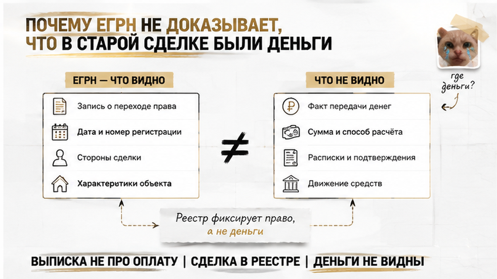
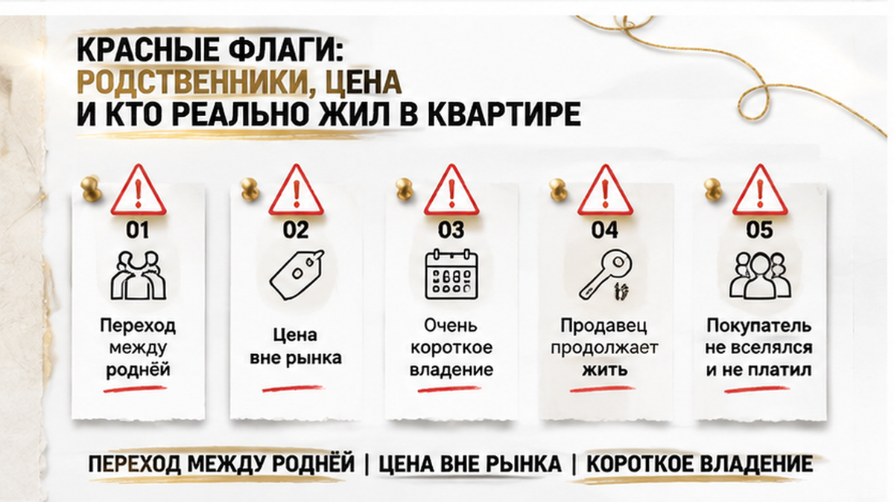

Семья в Тюмени купила вторичку, спокойно прожила в ней два года — и потеряла квартиру по решению суда. Не за свою ошибку.
Расчёт с продавцом прошёл полностью, право зарегистрировали без замечаний, а выписка ЕГРН на момент покупки была абсолютно чистой: ни обременений, ни арестов, ни запретов. Продавец — «новый» собственник, документы в порядке, у банка вопросов нет. Примерно через два года после смерти прежнего владельца в суд пришли его родственники и заявили, что одна из старых сделок в цепочке переходов была фиктивной. Суд с ними согласился: договор купли-продажи между родственниками признали мнимым по ст. 170 ГК РФ — и вместе с ним рассыпалось всё, что стояло сверху, включая право покупателя, который к той истории вообще не имел отношения. Разбираю это как handoff-казус из практики, а не как опубликованный судебный акт: номер дела, адрес, суммы и фамилии называть нельзя, и я их не называю.
Я Святослав Шакин, The Риэлтор, Тюмень — веду вторичку и разбираю историю квартиры до аванса, а не после регистрации. Если у вас на руках выписка и «всё чисто», напишите мне до того, как деньги ушли: Telegram или MAX — посмотрю цепочку переходов и скажу, где в ней слабое звено.
Начну с того, что покупатели сделали правильно. Запросили актуальную выписку из ЕГРН. Сверили собственника по паспорту. Убедились, что нет обременений и судебных запретов. Заплатили ровно тому, кто указан в реестре, зарегистрировали переход права. По любому чек-листу из интернета такая сделка проходит как «чистая».
Только чистой была их сделка. А право собственности — не отдельный документ, это последнее звено цепочки. Если где-то в предыдущих переходах лежит недействительная сделка, всё, что зарегистрировано после неё, стоит на плохом фундаменте.
Обычный покупатель смотрит на выписку и видит: «собственник тот, обременений нет, можно вносить аванс». Риэлтор смотрит на ту же выписку и спрашивает: «а в предыдущем переходе деньги вообще двигались?» Реестр на этот вопрос не отвечает — он не оценивает, были ли в прошлых сделках реальные платежи.
Сценарий не тюменская экзотика. Александр Клышин в разборе «5 схем законной потери квартиры после покупки» описывает его как схему №3: по документам сделка есть, денег не было, а через какое-то время наследники или родственники заявляют о её фиктивности. Наш случай лёг в эту схему почти буквально.
И деталь, которая ломает привычную логику. Зарегистрированный переход права и фраза в договоре «расчёт произведён полностью» не подтверждают оплату безусловно. По п. 3 ст. 486 ГК РФ и п. 65 совместного Пленума ВС/ВАС № 10/22 регистрация перехода не мешает требовать оплату и расторжения договора, а суд вправе потребовать доказательства платежа. Даже расписка о получении денег срабатывает не всегда — я разбирал отдельный случай, где бумага была, а следа денег не нашлось.
Разверните историю квартиры — и картина такая. Был прежний владелец. Потом квартира перешла к его родственнику по договору купли-продажи. Потом этот родственник продал её нашей семье. Три звена. Первое и третье вопросов не вызывали. Вопрос был во втором.
Формально то звено оформлено как обычная купля-продажа: договор, стороны, цена, переход права в ЕГРН. Фактически деньги между родственниками не передавались. «Продажа» на бумаге — может, чтобы упростить будущее наследование, может, чтобы вывести квартиру из каких-то рисков, может, просто «чтобы было оформлено на своего». Мотив здесь не главное. Главное, что по ст. 170 ГК РФ сделка, совершённая без намерения создать реальные правовые последствия, — мнимая.
При этом суд не признаёт сделку мнимой только потому, что кто-то потом назвал её формальной. Позиция Верховного Суда строгая: надо установить, что стороны не хотели реальных последствий. Если оплата была — в том числе ипотечными деньгами, — оснований для мнимости нет, даже когда продавец сам считал продажу формальной под влиянием чужих уговоров. Поэтому в спорах о мнимости всё сводится к двум вещам: к деньгам и к тому, кто фактически пользовался квартирой.
Юрист Илья Русяев (PRIME, RIA) перечисляет, что суд исследует в таких делах: откуда у покупателя деньги на квартиру, соответствует ли цена рынку, кто фактически жил в жилье после отчуждения. Продолжение проживания продавца в «проданной» квартире и оплата им содержания могут подтверждать мнимость по ст. 170 ГК РФ. В нашем звене такие признаки были.
Отдельно скажу: родственники в сделке — это не автоматически схема. Бывает наоборот, когда родня останавливает продажу и спасает пожилого продавца. Опасно не родство, а родство плюс отсутствие следа денег.
Пока прежний владелец был жив, спора не было. И это не везение, а юридическая механика: наследник не может при жизни собственника оспаривать его сделки на том основании, что рассчитывает получить эту квартиру потом. Ожидание наследства — не право.
После открытия наследства всё меняется. Родственники увидели, что квартира, которую они считали семейной, в наследственную массу не попала: давно «продана» и уже перепродана дальше, посторонним людям. И пошли доказывать, что той продажи по сути не было.
Срок здесь играет против покупателя. По сообщению Jurisora о позиции Верховного Суда, наследник может подключиться к спору об оспаривании сделки наследодателя спустя несколько лет после открытия наследства. А прекращение производства после смерти продавца не всегда закрывает историю: наследник умершего истца вправе добиваться пересмотра акта о прекращении дела. То есть дело, которое казалось похороненным вместе с участником, способно ожить. Похожая логика была в сюжете, где наследник подключился к спору спустя годы — только там речь шла о сыне от первого брака и об отказе, которого никто не подписывал.
Значение имеет и хронология. Отчуждение, сделанное задолго до долгов и неплатёжеспособности, суд оценивает иначе, чем переход права в разгар финансовых проблем. В нашем случае суд смотрел не на долги. Он смотрел на другое: были ли деньги и кто на самом деле жил в квартире после «продажи».
Суд не стал разбирать сделку моих земляков. Он разобрал ту, что была до неё.
Вывод получился коротким: договор между родственниками — мнимый. Стороны не собирались создавать реальные правовые последствия, деньги не двигались, владение фактически не менялось. Это статья 170 ГК РФ. А дальше включилась арифметика цепочки: если звено недействительно, всё, что выросло сверху, стоит на пустом месте. Право покупателя, который в своей сделке не нарушил ровным счётом ничего, отменили.
Потом начинается двусторонняя реституция — пункт 2 статьи 167 ГК РФ. На бумаге симметрично: квартира возвращается той стороне, у которой её забрали по недействительной сделке, деньги — покупателю по этой сделке. Вся боль спрятана в двух словах «по этой». Наш покупатель во первой сделке не сторона вообще. Свои деньги он взыскивает со своего продавца — того самого «нового» собственника, у которого к моменту решения обычно ни квартиры, ни активов, ни желания разговаривать.
Вступившего в силу решения достаточно, чтобы прежнее право зарегистрировали обратно. Запись в реестре меняется за дни. Взыскание живёт годами.
Оговорюсь честно, чтобы не пугать сверх меры. Это handoff-казус из практики, а не опубликованный судебный акт: номера дела, адреса, суммы и фамилии я не называю и за прецедент выдавать не буду. И читать историю как «нет следа денег — значит мнимая» тоже нельзя. Верховный суд прямо указывал: нельзя признать сделку мнимой только потому, что продавец сам считал продажу формальной под влиянием мошенников, — если оплата была реальной, в том числе ипотечными деньгами, оснований для мнимости нет. Значение имеет и хронология: отчуждение задолго до долгов оценивается иначе, чем перевод квартиры в разгар финансовых проблем.

Выписка ЕГРН о переходе прав — отличный документ. Она покажет цепочку собственников, даты переходов и основания: купля-продажа, дарение, наследование. Она не покажет одного — двигались ли деньги. Реестр фиксирует юридический факт перехода, а не банковский платёж.
Обычный покупатель, глядя в выписку, видит: «Здесь купля-продажа, значит, кто-то кому-то заплатил». Я в том же месте вижу только слово «купля-продажа» и спрашиваю: чем подтверждается, что тогда деньги реально передавались?
Дальше начинается то, что для многих новость. Регистрация перехода права сама по себе не мешает продавцу требовать оплату и расторжения договора — пункт 3 статьи 486 ГК РФ и пункт 65 постановления Пленума ВС и ВАС № 10/22. «Уже зарегистрировано» не равно «уже оплачено и закрыто».
И самое неприятное: формула «расчёт произведён полностью до подписания договора» — не безусловное доказательство оплаты. Суд вправе потребовать доказательства платежа. Даже расписка о получении денег не всегда признаётся безусловным подтверждением, что деньги действительно передавались. Я разбирал это на отдельном сюжете — расписку на квартиру написали, а денег на счёте нет.
Что тогда работает? Всё, что оставляет след вне текста договора: выписки по счетам, платёжное поручение, кредитный договор, 2-НДФЛ или декларация как подтверждение источника, отчёт оценщика по цене, аккредитив, документы по банковской ячейке. Подтверждения фактического перемещения денег. Если по прошлой сделке такого следа нет вообще, у обвинения в формальности появляется опора.
И ещё слой, про который любят забывать. Росреестр при регистрации по нотариальному договору не вправе заново проверять законность сделки: нотариальная форма ускоряет процесс, но щита от будущего спора о мнимости не даёт. Регистратор смотрит на форму, суд — на суть. Как «чистая» выписка не спасла даже одобренную ипотеку, у меня отдельный разбор: ипотеку одобрили, а регистрацию отменили.

Первый флаг — переход права между родственниками. Сам по себе он законен: люди продают квартиры детям, братьям, родителям. Но именно эта конструкция чаще всего оформляется формально — и именно она стоит в схеме, которую Александр Клышин описал как «квартира без денег».
Второй — цена. Заметно ниже рынка на дату той сделки или, наоборот, странно выше. Юрист Илья Русяев в комментарии PRIME (RIA) объяснял: суд исследует и соответствие цены рынку, и источник денег у покупателя спорной сделки — откуда сумма и была ли она вообще.
Третий — короткий срок между переходами. Квартира перешла к родственнику, а через несколько месяцев ушла дальше. Вопрос «зачем здесь был промежуточный собственник» возникает у суда сам, без чьей-либо помощи.
Четвёртый и самый говорящий — кто фактически жил в квартире после «продажи». Если прежний собственник остался и продолжал платить за содержание, это, по позиции Русяева, может подтверждать мнимость по статье 170 ГК РФ. Владение не менялось — значит, реального перехода стороны не хотели.
Пятый касается уже вас. «Ведомости» писали: покупателя могут признать недобросовестным, если он знал, что продавец намерен жить в квартире после продажи или действует под давлением родственников. То есть «я же не знал» перестаёт работать, когда признаки лежали на поверхности. Как выглядит вмешательство родни в живую сделку, я показывал здесь: в Тюмени родственники остановили продажу пожилого продавца.
Обычная проверка вторички у меня начинается не с папки текущего продавца. Она начинается с выписки о переходе прав за всю историю объекта — я ищу в цепочке место, где сделка выглядит формальной: переход между родственниками, короткое владение, цена явно вне рынка.
Нашлось такое звено — задаю неудобный вопрос: чем подтверждается, что тогда деньги реально передавались.
Продавец обычно удивляется: «Так это дела прошлого хозяина, при чём тут я?» При том, что через два года суд будет разбирать именно прошлого хозяина, а квартиру заберут у вас.
Покупатель смотрит на последнего собственника. Риэлтор смотрит на звено, где деньги никто не видел.
Вот что я прошу собрать до внесения аванса — пока торг за документы ещё возможен.
Отдельно про нотариат, раз о нём всегда спрашивают. Нотариальная форма помогает, но цепочку неуязвимой не делает: по позиции, отражённой в обзоре ВС, Росреестр при регистрации по нотариальному договору не вправе заново проверять законность сделки. Регистратор — не фильтр качества истории объекта, а исполнитель. Чужое прошлое проверяете вы.
Плюс покупателя могут признать недобросовестным. «Ведомости» писали: недобросовестность возможна, если покупатель знал, что продавец собирается жить в квартире после продажи или действует под давлением родственников. Значит «я не знал» нужно уметь показать документами, а не интонацией.
Если в выписке о переходе прав видна сделка между родственниками без следа оплаты — вы режете аванс или верите, что «в ЕГРН всё чисто»? Напишите в комментариях, мне правда интересно, где у людей проходит граница риска.
Я Святослав Шакин, The Риэлтор, Тюмень. Смотрите сейчас вторичку и в истории объекта есть непонятный переход — пришлите выписку, скажу, куда смотреть до аванса: Telegram или MAX.
Главная ловушка тюменского казуса — вера в то, что выписка ЕГРН отвечает на все вопросы. Она отвечает ровно на свои: кто, когда и на каком основании стал собственником. Про деньги, мотивы и фактическое пользование в ней нет ни строки. Иногда безупречная выписка не спасает даже одобренную ипотеку — я писал про случай, где регистрацию отменила одна строка. Ниже — как я развожу эти уровни в работе.
| Сведение | Что выписка показывает | Какой вывод сделать нельзя | Чем закрываю до аванса |
|---|---|---|---|
| Цепочка собственников | Кто владел объектом и в какой последовательности | Были ли участники переходов роднёй и о чём договорились между собой | Сверка фамилий, справка о зарегистрированных, прямой разговор с продавцом |
| Даты и номера регистрации | Длину каждого периода владения | Почему владение было коротким — переезд или формальный перескок | Объяснение продавца плюс договор прошлой сделки целиком |
| Основание перехода | Тип документа: купля-продажа, дарение, наследование | Передавались ли деньги фактически | Банковская выписка, платёжка, аккредитив, документы ячейки |
| Цена сделки | В выписке о переходе прав её нет | Соответствовала ли сумма рынку на ту дату | Отчёт оценщика или подборка сопоставимых предложений периода |
| Обременения и аресты | Ограничения на дату выдачи документа | Готовится ли иск о мнимости, который ещё не подан | Поиск по картотекам судов, состав наследников, срок владения |
| Кто пользовался квартирой | Не отражается вовсе | Жил ли прежний собственник после «продажи» и платил ли ЖКУ | Квитанции, история лицевого счёта, осмотр, соседи |
Правая колонка — не экзотика, а работа двух-трёх дней. Дороже она становится ровно в одном случае: если начать её после аванса.
Родственные сюжеты бывают и громче — например, когда родственники останавливают продажу прямо на сделке. В нашем казусе всё было тихо: чистая выписка, спокойный продавец, зарегистрированное право — и мнимая сделка двумя звеньями раньше.
Вывод, который я держу в голове на каждом объекте вторички: вы покупаете не квартиру, а её историю платежей. Пока в этой истории есть переход, где деньги никто не видел, риск не исчезает от того, что ваш собственный договор идеален.